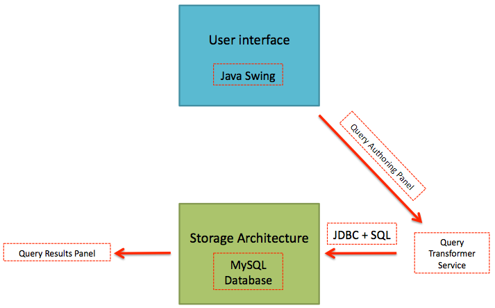
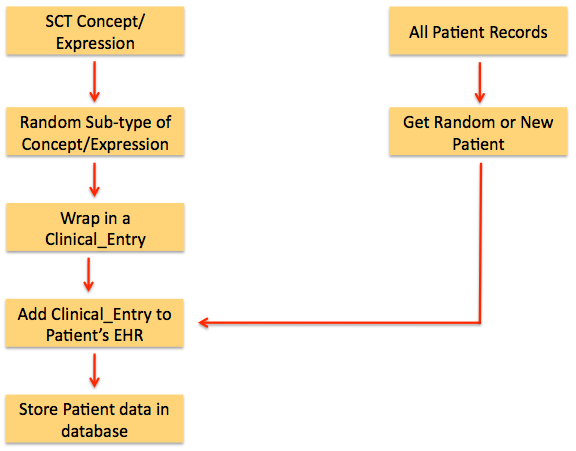
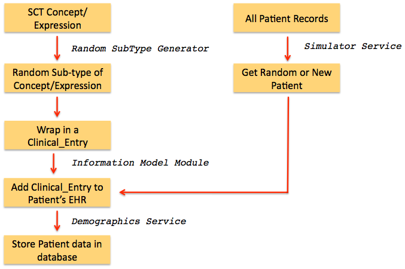

This section provides an overview of how Snofyre generates data and stores the data in
its database backend. In order to focus on key application logic, this section does not
describe all the events that occur at the user interface level during data
generation.
When the user creates a new query or load an existing query (from file) and pushes the
Generate Databutton, in the
Data Generation Panel, the user only see a progress bar of data
generation. The high level steps of this process are shown in the figure below.
Figure 1. Snofyre's Query Execution
Process

Detailed steps
The steps of this process are
listed here and are also shown in the figure below.
- Snofyre can generate data based on parameters passed in a query.
- The SNOMED CT concept or post-coordinated expressions specified in the query criterion of a query is identified.
- A random subtype of this concept or post-coordinated
expression is generated by substituting it with its descendant if it is
a concept or qualifying it along either the optional or definitional
attributes if it is a post-coordinated expression.
- This random subype concept or post-coordinated expression is
wrapped in a Clinical Entry object, with some random timestamp.
- At the same time an existing random patient or a new patient is selected (based
on data generation strategy).
- The wrapped clinical entry is now added to the this patient's
record.
- The patient record is now stored in the backend (MySQL database) and the
progress bar in the interface is updated to provide
feedback.
Figure 2. Snofyre's Query Execution
Process

Snofyre uses three functional services and its Snofyre Information Model Module to perform the various
tasks in this process. These services are described below.
Simulator Service
The
Simulator Service identifies a random patient or generates a new patient
record, based on the data generation strategy. It also assigns a random time stamp
to the
clinical entry that is used to wrap the
random subtype.
Attention: Please note that the data generation strategy
determines if a random existing patient record is used or a new patient record
is created.
Random Subtype Generator
The
Random Subtype Generator service returns a random
concept or
post-coordinated expression for a given expression. Details of the
Random Subtype Generator are described in the Functional Services Manual.
Attention: The algorithm used by the Random Subtype
Generator use recursion and randomise data along many axes. These can
be partially configured by the user using the Data Generation Panel.
Information Model Module
The Information Model Module contains all the class modelling needed to add
a random concept or post-coordinated expression to an EHR.It is further described in the Functional Services Manual and later on in
Information Model
section of this document.
Demographics Service
The
Demographics Service saves the patient record in the underlying MySQL database.
Details of the
Demographics Service are described in the Functional Services Manual.
Attention: Please note that the Demographics Service uses Hibernate to
store the patient data in the backend.
The various steps in the process at which these three services act is shown below.
Figure 3. Services involved in Query
Execution Process
